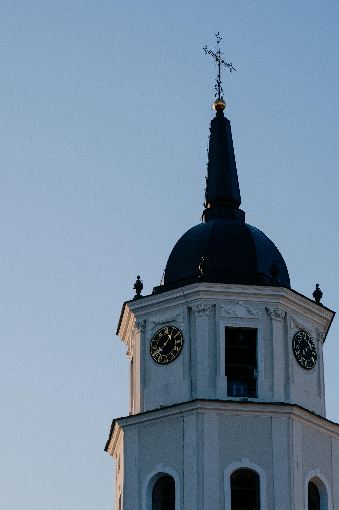
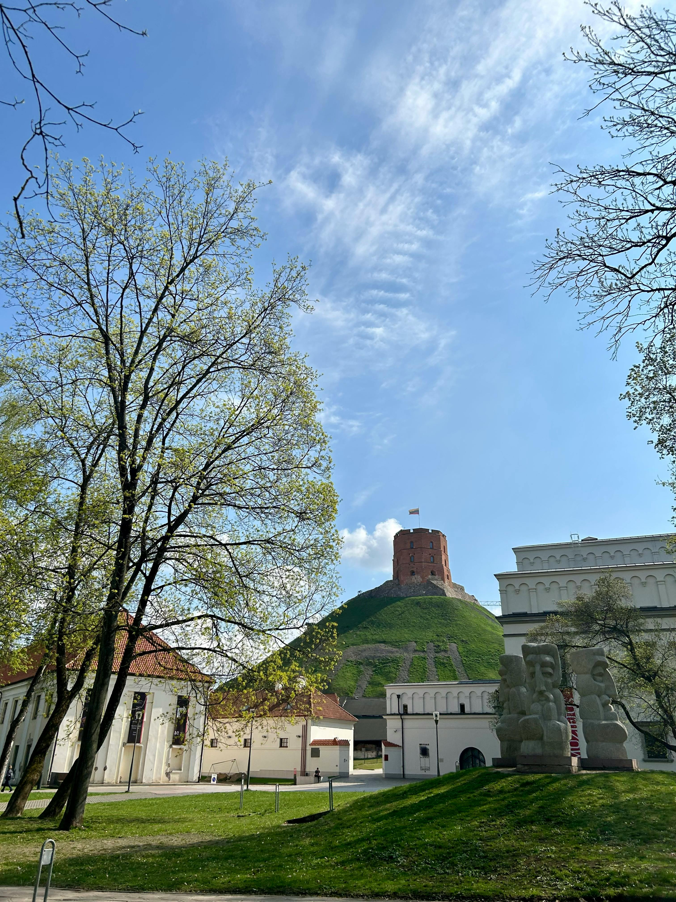
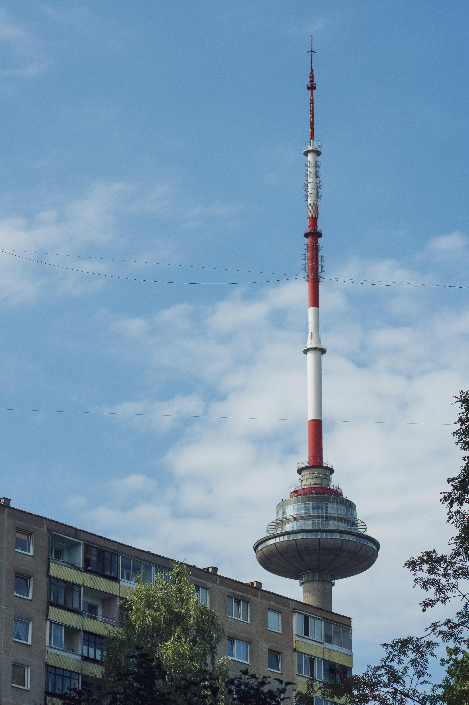
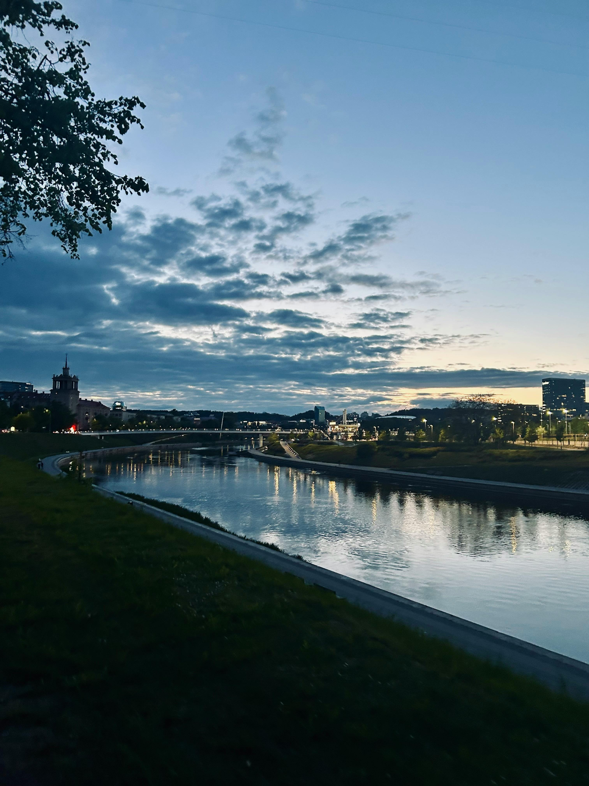

I went to Vilnius in 2011 for a Lithuanian wedding — and it gave me a completely different experience of the country than any ordinary tourist would get. The city itself was extraordinary — one of the largest and most beautiful medieval Old Towns in Europe, peaceful, green and almost entirely undiscovered by Western tourists at the time. And then the wedding. Trakai Island Castle. A lakeside venue in the Lithuanian countryside. Folk music, vodka toasts that went on forever, cepelinai the size of small aircraft and dancing deep into the Baltic night. Lithuania got completely under my skin.




I had been invited to a Lithuanian wedding — which immediately put me in a category very different from the ordinary tourist. Being brought into a family's celebration, shown the country from the inside, introduced to traditions and food and music and an entire culture in the most personal possible way — it is one of the great privileges of travel and one that changes how you see a place permanently.
But Vilnius the city was already extraordinary before the wedding. I arrived knowing almost nothing about it and left convinced it was one of the most underrated capitals in Europe. The Old Town — one of the largest and best-preserved medieval city centres on the continent — was peaceful, green and beautiful in a way that felt entirely unhurried. No queues. No overcrowding. Just cobblestone streets, baroque churches, Gothic towers, hidden courtyards and the sense of a city that had been through extraordinary things and had come out the other side with its character completely intact.
The mix of influences visible everywhere in Vilnius is unlike any other European city — Catholic Lithuanian, Soviet, Polish, Jewish, Baltic Pagan — all layered on top of each other in the architecture, the food, the language and the culture. It is a genuinely fascinating place to try to understand, and the wedding gave me an insight into the human warmth beneath it all that no guidebook ever could.
Vilnius Old Town is a UNESCO World Heritage Site covering nearly 360 hectares — one of the largest and most intact medieval city centres anywhere in Europe. And in 2011, almost nobody in Western Europe had been there. The streets were quiet. The churches were extraordinary. The views from Gediminas Hill over the red-roofed baroque skyline were breath-taking. And the whole thing cost almost nothing.
The neoclassical Vilnius Cathedral stands at the heart of the city — a grand white building with a separate bell tower that has been the symbolic centre of Lithuanian Catholicism for centuries. Cathedral Square in front of it is the city's main gathering place and the starting point for most Old Town explorations. A small pavement tile near the cathedral marks a wish-granting spot — finding it and spinning three times while making a wish is an irresistible Vilnius tradition.
Gediminas Castle Tower is the surviving remnant of the Upper Castle that once dominated Vilnius — a red-brick Gothic tower on a hill above the Old Town that is the most recognisable symbol of the city and the emblem of Lithuania itself. Climbing to the top gives extraordinary views over the baroque skyline of the Old Town, the Neris River below and the Soviet-era districts beyond. The Lithuanian flag flying from the tower is a powerful symbol of a small country's survival and independence.
The Gate of Dawn is the only remaining gateway in Vilnius's original city walls — and one of the most significant religious sites in the entire Baltic region. Above the gate is a chapel housing the miraculous image of the Blessed Virgin Mary of Ostra Brama, venerated by Catholics from across Lithuania, Poland and beyond. Pilgrims kneel in the street below the gate to pray. The combination of architectural beauty and genuine spiritual significance makes it one of the most moving places in Vilnius.
St Anne's Church is one of the most beautiful Gothic buildings in Eastern Europe — a delicate red-brick masterpiece of flamboyant Gothic architecture that stands in extraordinary contrast to the wider baroque character of Vilnius. Napoleon, passing through in 1812, was so taken with it that he reportedly said he wished he could carry it back to Paris in the palm of his hand. Standing in front of it, you understand completely why.
Užupis is one of the most original and charming neighbourhoods in any European city — an artists' district that declared itself an independent republic in 1997, complete with its own constitution, president, army (of about eleven people) and national holidays. The constitution, displayed on plaques in dozens of languages around the district, includes such rights as "the right to be happy," "the right to be unhappy" and "the right to be unique." It is full of street art, independent cafés, murals and a spirit of creative irreverence that is entirely its own.
About 28 kilometres west of Vilnius, in a landscape of lakes, forests and wooden villages, sits one of the most beautiful and most photogenic sites in all of Lithuania — Trakai Island Castle. A medieval red-brick fortress built on an island in Lake Galvė, accessed by wooden bridges across the water, dating from the 14th century when it was the residence of the Grand Dukes of Lithuania.
The Trakai region — with its lakes, forests and wooden countryside venues — is the natural setting for a traditional Lithuanian wedding. The landscape is extraordinary in any season: misty and romantic in autumn, snow-covered and magical in winter, lush and green in summer. Being brought out here for a wedding — away from the city, into the Lithuanian countryside proper — gave a completely different sense of what Lithuania actually is beyond the Old Town.
The castle itself can be explored independently — the interior houses a museum of the Grand Duchy of Lithuania and the views from the towers over the surrounding lakes are spectacular. Trakai is one of the most visited sites in Lithuania and completely worth the short journey from Vilnius.
A Lithuanian wedding is an event quite unlike any wedding in Ireland or Western Europe. The traditions are extensive, the food is enormous and arrives in waves, the vodka toasts go on for what feels like several geological epochs and the dancing — folk dances, modern music, anything and everything — continues until the sun comes up. The warmth is extraordinary. Once you are accepted as a guest, you are treated with a generosity that is genuinely humbling.
The food at a Lithuanian wedding arrives continuously and in quantities that suggest the hosts are afraid of running out and have pre-emptively tripled everything. Cepelinai — the enormous potato dumplings — appear early and in volume. Cold meats, pickled vegetables, smoked fish, dark bread, soups, roasted meats — course after course in a celebration of everything Lithuanian cooking does well. The honey liqueur — midus — is served between courses and is considerably more powerful than it tastes.
The toasts. The toasts deserve their own paragraph. At a Lithuanian wedding, toasting is not a brief formality — it is a sustained communal activity involving everyone in the room, multiple times per hour, in multiple languages, with increasing enthusiasm and decreasing coherence as the evening progresses. You will toast the couple, the families, the guests, Lithuania, Ireland, friendship, love, the food, the drink, the occasion and several concepts that become less easy to articulate as the night continues.
Lithuanian cuisine is the cuisine of a cold Northern European country — hearty, warming, built around potatoes, pork, dairy and game, with influences from Poland, Russia, Germany and the Baltic Pagan tradition. It is not subtle but it is deeply satisfying and at its best genuinely brilliant.
The national dish — enormous potato dumplings shaped like zeppelins, stuffed with minced meat, served with sour cream and bacon. Extraordinary.
Lithuania has a strong craft beer tradition — dark, malty and excellent. Svyturys and Kalnapilis are the most famous local brands.
Traditional Lithuanian mead — honey fermented with spices. Smooth, fragrant, dangerously easy to drink and very alcoholic.
Dense, slightly sour, served with everything. Baltic rye bread is one of the great breads of the world and Lithuania's is exceptional.
Flaky pastry pockets stuffed with meat — a speciality of the Karaite people of Trakai, sold everywhere around the castle.
Not food but everywhere — amber jewellery shops line every tourist street in Vilnius. Baltic amber is the region's most famous product and genuinely beautiful.
Folk music, vodka toasts, cepelinai in industrial quantities, traditional games and dancing until the Baltic sun came up. The most extraordinary and most personal way to experience a country. A night I will never forget.
A red-brick medieval castle on an island in a lake, accessed by wooden bridges, surrounded by pine forests. One of the most beautiful and most improbably perfect sites in all of the Baltics.
One of the largest medieval Old Towns in Europe — green, peaceful, almost entirely undiscovered by Western tourists in 2011. Baroque churches, Gothic towers and cobblestone streets with nobody in the way.
The red-brick Gothic masterpiece that Napoleon wanted to carry back to Paris. Standing in front of it you understand why completely. One of the most beautiful churches in Eastern Europe.
Its own constitution, its own president, its own army of eleven people. The most creative and most charming neighbourhood in any European capital — and a constitution that guarantees your right to be unhappy.
The national dish of Lithuania — potato dumplings the size of small aircraft, stuffed with minced meat and served with sour cream and bacon. Eaten at the wedding in quantities that should not have been physically possible.
Lithuania is the natural southern anchor of a Baltic States tour — Vilnius to Riga in Latvia to Tallinn in Estonia makes one of the great underrated European road trips. TourRadar has brilliant Baltic itineraries covering all three countries, as well as standalone Vilnius options.
Disclosure: This is an affiliate link. If you book through it we may earn a small commission at no extra cost to you.
Old Town walking tours, Trakai Island Castle day trips, Gediminas Tower visits, Užupis guided tours, KGB Museum visits and Baltic States multi-city excursions — book in advance, especially the Trakai day trip which is very popular.
Disclosure: If you book through this link we may earn a small commission at no extra cost to you.
Klook has Vilnius city tours, Trakai day trips and Lithuania experiences — great for booking individual activities around your stay.
Disclosure: This is an affiliate link. If you book through it we may earn a small commission at no extra cost to you.
Common questions
What to pack for Lithuania
Vilnius means cobblestone walking, variable weather and evening dining — pack practically and warmly, especially outside summer.
Lithuania uses EU roaming rules but an eSIM gives seamless data for navigating Vilnius and the road to Trakai.
View on Amazon →Lithuania is cold outside summer — warm layers are essential for the cobblestone streets, castle ramparts and lakeside views.
View on Amazon →Vilnius's Old Town cobblestones are beautiful and uneven — proper shoes with grip are essential, especially in wet weather.
View on Amazon →Long days of Old Town wandering and Trakai day trips — keep your phone charged for maps and capturing the castle on the lake.
View on Amazon →For city days and the Trakai trip — keeps your essentials close and your hands free for amber jewellery shopping.
View on Amazon →Lithuania uses European two-pin plugs — a universal adaptor covers all your devices.
View on Amazon →Disclosure: These are Amazon affiliate links. If you buy through them we may earn a small commission at no extra cost to you.
Lithuania is the southern anchor of the Baltic States — read our other nearby guides below.
Medieval cobblestones, elk by candlelight and a city caught between East and West. The northern Baltic sister to Vilnius.
Read the Estonia guide →The imperial Russian influence so visible in Lithuania's history is fully explained in St Petersburg's palaces and the Hermitage.
Read the Russia guide →Ten days in the City of a Hundred Spires — another extraordinary Central/Eastern European medieval city completely worth the journey.
Read the Prague guide →Wander the Old Town, climb Gediminas Tower, visit the Gate of Dawn, find the Užupis constitution, eat cepelinai and get out to Trakai Island Castle. And if someone invites you to a Lithuanian wedding — say yes immediately.
Affiliate disclosure: if you book through our links we may earn a small commission at no cost to you. We only recommend experiences we've done ourselves.